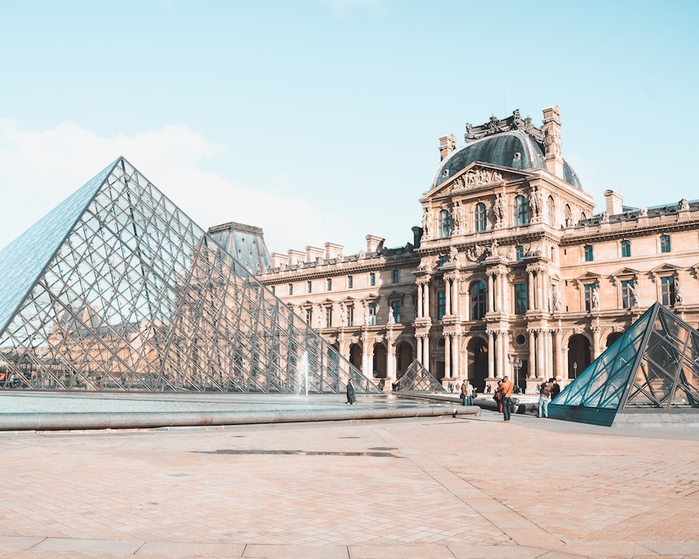
Paris, France
OPEN UP
The Louvre is one of my favorite places to visit in Paris. The Louvre museum Paris is divided in eight different artistic departments; paintings, Egyptian antiquities, Greek, Roman, and Etruscan antiquities, Oriental antiquities, sculptures, art objects, art of Islam, and finally graphic arts.
Overall, the Louvre museum Paris contains over 1700 pieces of art.
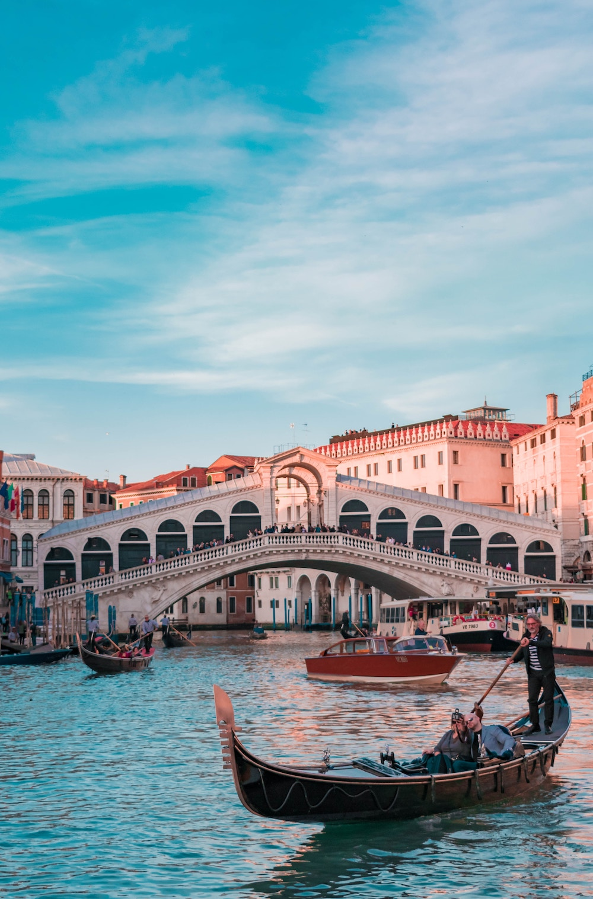
Venice, Italy
The Piazza San Marco may be more famous, but the Ponte di Rialto (Rialto Bridge) is the true heart of Venice. The current structure was built in just three years, between 1588 and 1591, as a permanent replacement for the boat bridge and three wooden bridges that had spanned the Grand Canal at various times since the 12th Century.
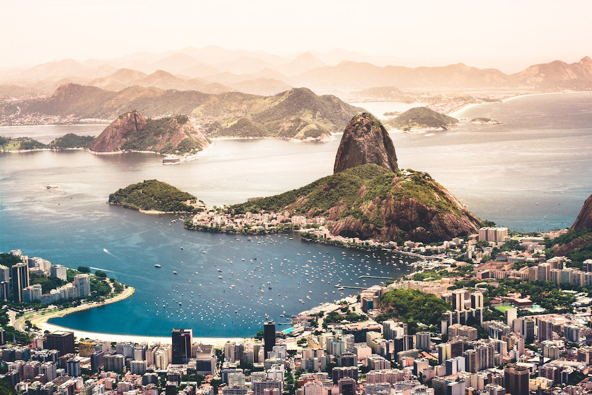
Rio De Janeiro, Brazil
Today, Rio de Janeiro is considered the cultural capital of Brazil because of its combination of historic and modern architecture, its more than 50 museums, popularity of music and literature, and its yearly Carnaval celebration.
Rio is a big city, with more than 6 million inhabitants, but it can feel like a small town, the reason for that is Rio is home to the largest urban forest in the world, Floresta da Tijuca.
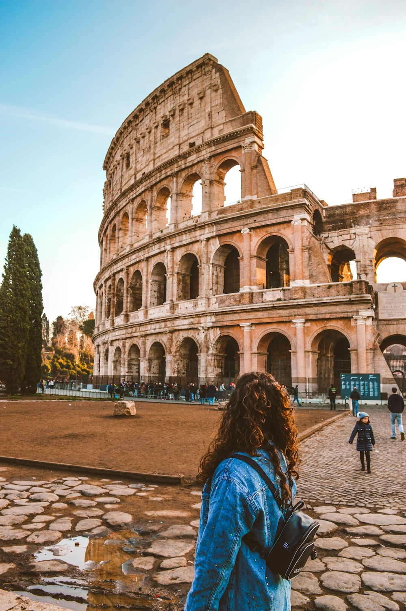
Rome, Italy
Inaugurated in AD 80, the 50,000-seat Colosseum, also known as the Flavian Amphitheatre, was originally clad in travertine and covered by a huge canvas awning. Inside, tiered seating encircled the arena, itself built over an underground
complex where animals were caged and stage sets prepared. Games involved gladiators fighting wild animals or each other.
Two thousand years on and it's Italy's top tourist attraction.
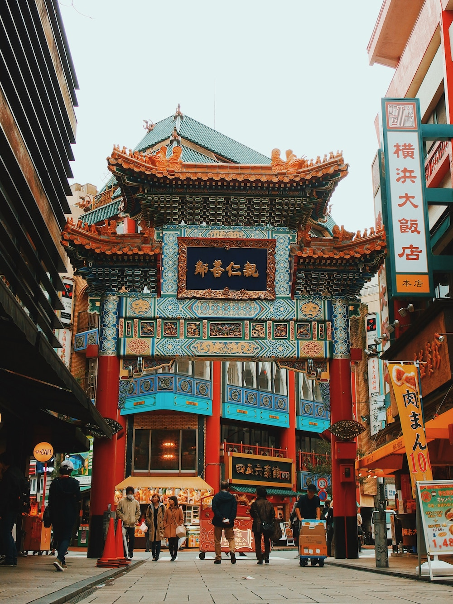
Yokohama, Japan
Japan’s reopening to the world also attracted many Chinese people to Yokohama City who started settling in the area of Chinatown in the 1850s. Today it is famous for the more than 500 restaurants found within the four gates which make up the entrances to Chinatown, at the center of which Kanteibyo, a temple built in 1873 and dedicated to
business and prosperity, can be found.

Kusco, Peru
Machu Picchu is the most famous and popular Inca archaeological ruin in the world.Built in the 1450s during the reign of Inca emperor Pachucuti, Machu Picchu is thought to have been either a country estate for the emperor, or an important place of worship. The exact purpose of the site is still unknown, though.
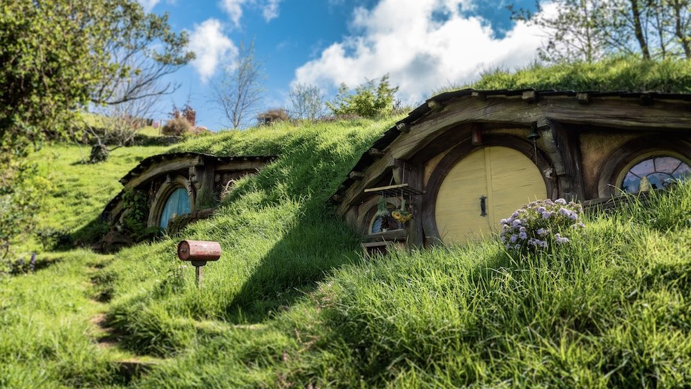
Waikato, New Zealand
One of the most successful movie sagas Lord Of The Rings was mainly filmed in New Zealand, whose rich nature offers a variety of differing sites. Hobbiton was a set, built for the movie. However, after the filming was finished somebody got the idea to leave this Hobbit village as the tourist attraction. And it definitely was a great idea.
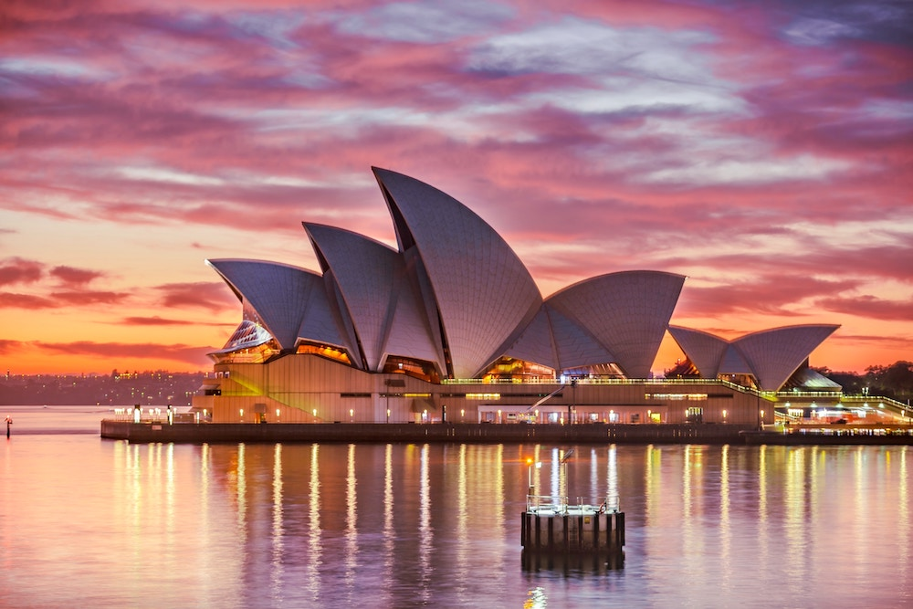
Sydney, Australia
On the edge of Sydney Harbour, one of the world’s great natural harbours, the Sydney Opera House is a UNESCO World Heritage site. It was evaluated as “one of the indisputable masterpieces of human creativity, not only in the 20th century but in the history of humankind”.
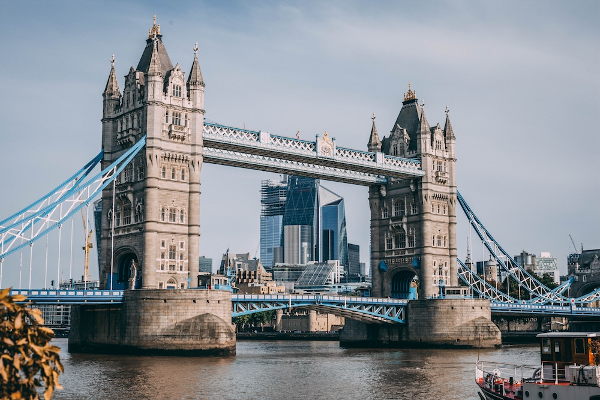
London, England
Tower Bridge is a combined bascule and suspension bridge over the River Thames in London and takes its name from the nearby Tower of London. Frequently mistaken for London Bridge, the next bridge upstream, it has become an iconic symbol of the city and a very popular tourist attraction.
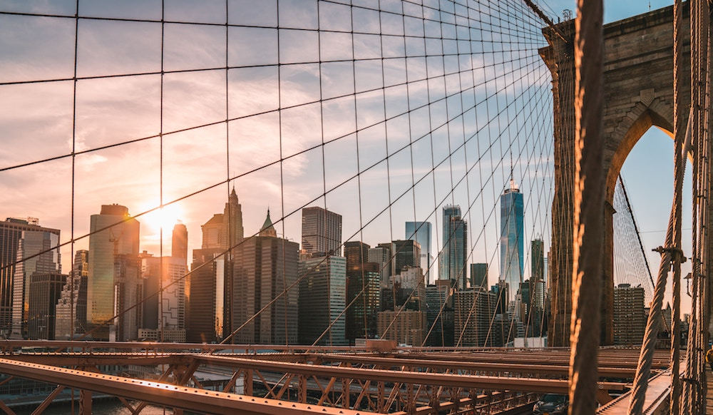
New York City, New York
Home to some of the world’s greatest music venues, and popular artists. Through the streets and behind the scenes of this incredible city, there are opportunities to experience live Broadway musicals, dozens of museums and galleries, and thousands of shops and famous restaurants.
The tremendous ethnic and cultural diversity of New York make it an unforgettable music festival destination.
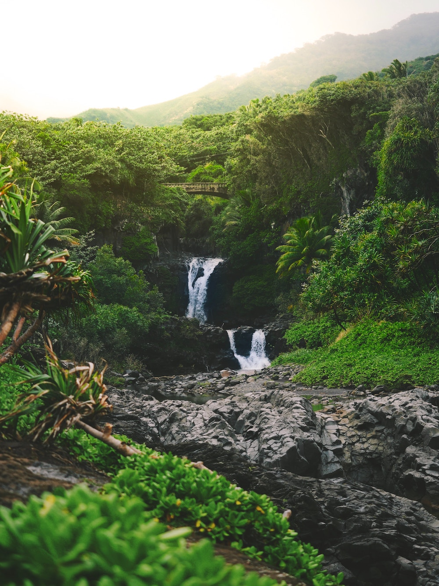
Oahu, Hawaii
The island is the most populated of all Hawaiian Islands, with about 75% of the state’s population calling Oahu home.
The state capital of Honolulu is located on Oahu, and features stunning architecture that dates back to Hawaiian Monarchy.
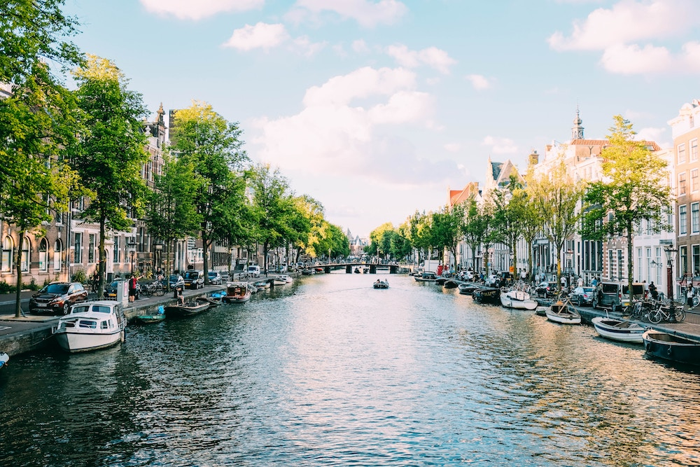
Amstredam, Netherlands
Amsterdam is one of the greatest small cities in the world. From Amsterdam canals to world-famous Amsterdam museums and historical Amsterdam sights, it is one of the most romantic and beautiful cities in Europe. Canal cruises are a popular way to see the city from the perspective of its canals.